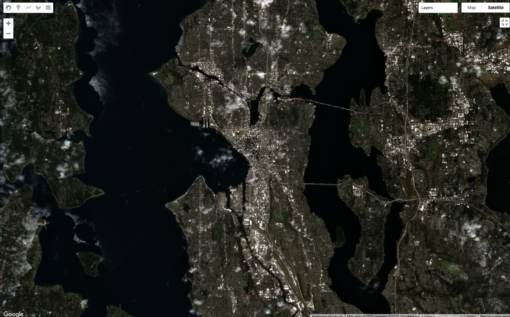
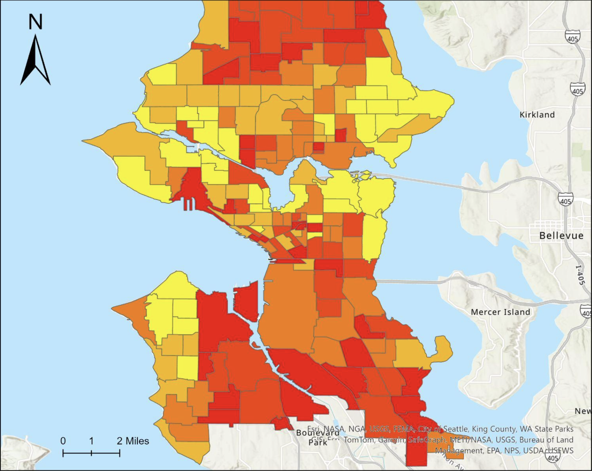
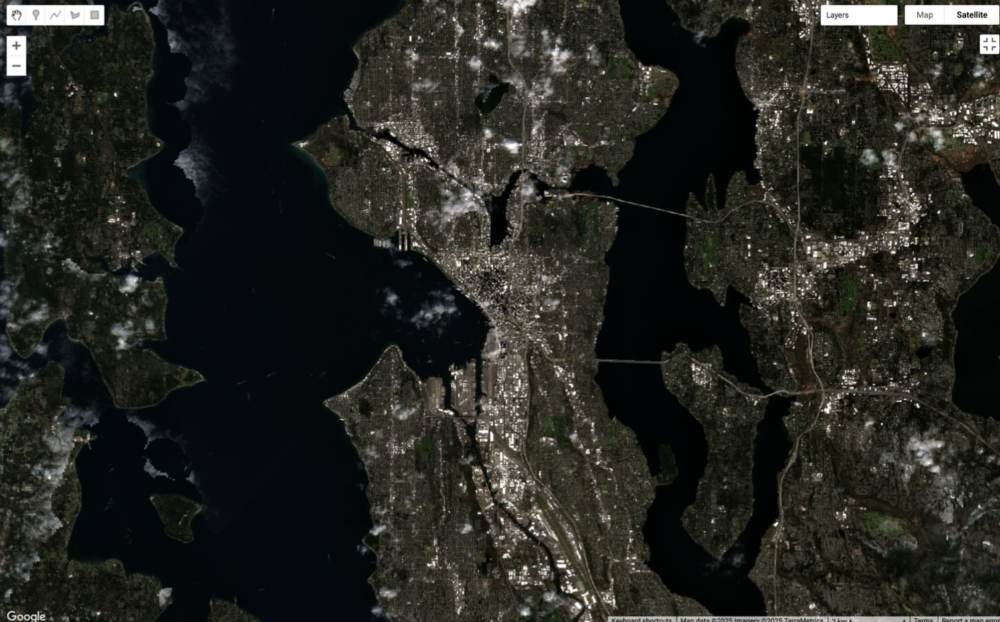
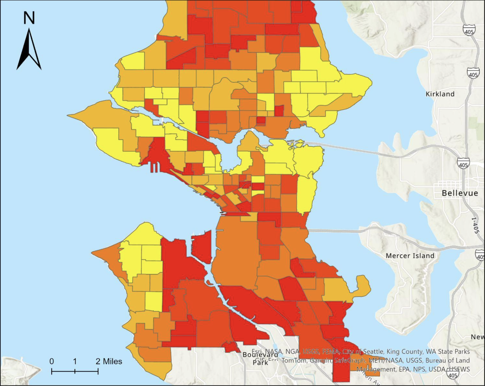

Welcome to My Portfolio
My name's Zach, and I'm a Geographic Data Science senior at the University of Washington.
Over the course of my time at UW I've become deeply interested in how I can apply my data visualization and statistical modeling skills for social policy and analytics. I am particularly interested in using urban spatial analysis for equitable land use planning.
Explore my projects in GIS, Machine Learning, and Data Visualization below.
This website is a work in progress, so you may notice some projects are not fully connected yet.

 


